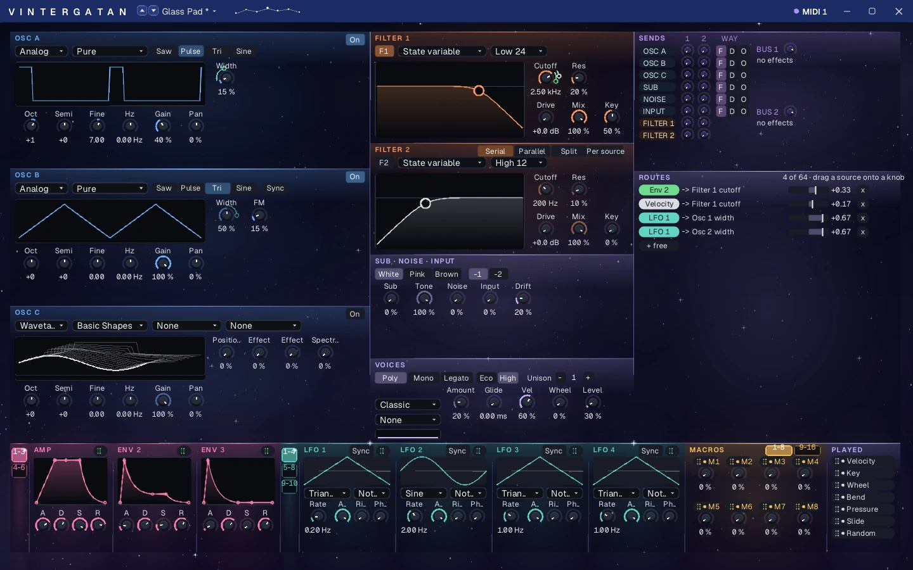
Wavetable synth
Vintergatan
The Milky Way. From soft pads to heavy bass, with wavetables to draw and shape and modulation you drag onto any knob. Opens your Serum and Vital presets.
Instruments, effects and a timeline to write, play, record and mix. On Mac, Windows and Linux.
Early in development · nothing to download yet
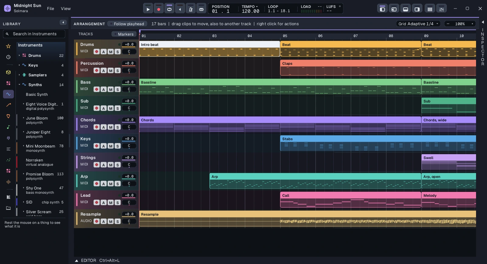
Everything a song needs comes with Solmara. Your own plugins play beside them.

Wavetable synth
The Milky Way. From soft pads to heavy bass, with wavetables to draw and shape and modulation you drag onto any knob. Opens your Serum and Vital presets.
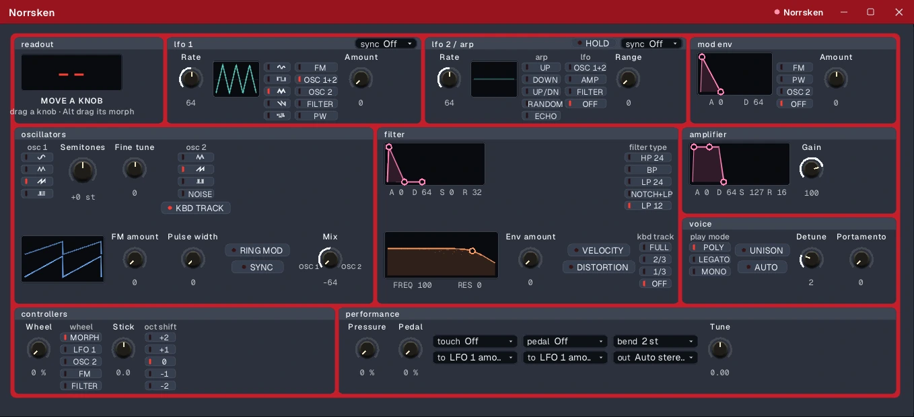
Virtual analogue synth
The northern lights. A bright, immediate synth for leads, stabs and pads, with a face made to be played.
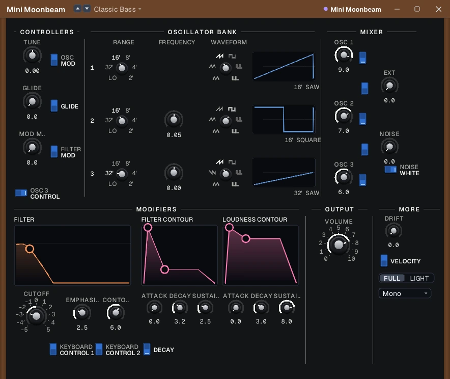
Monosynth
Three oscillators into a ladder filter, for basses and leads with weight.
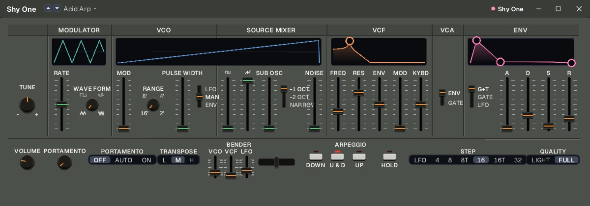
Bass monosynth
One oscillator with a sub, a filter and an arpeggiator. Small, quick and made for basslines.
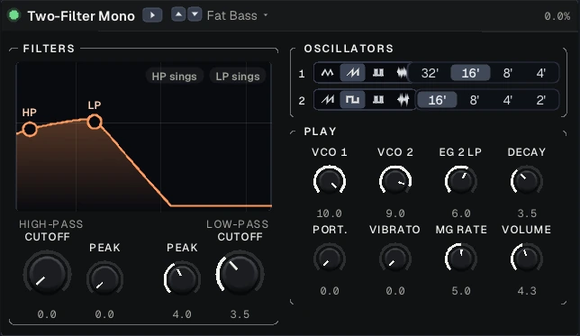
Semi-modular mono
A high-pass and a low-pass filter that both sing, and two oscillators with a raw edge.
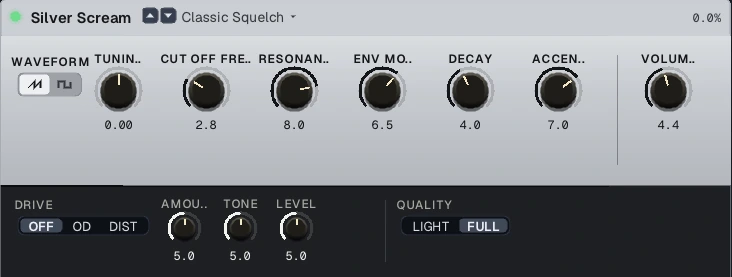
Acid bass
One oscillator, a squelching filter and an accent, for acid lines.
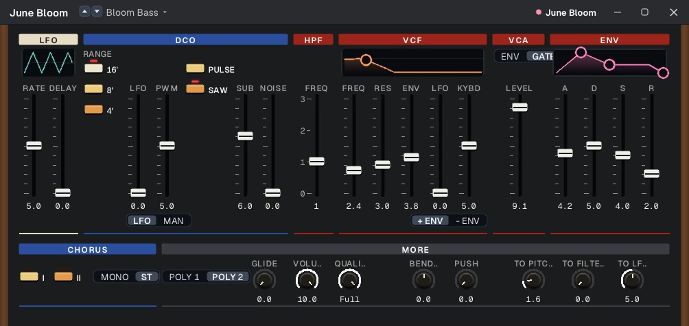
Polysynth
One oscillator a voice with a sub, and a chorus that makes it wide.
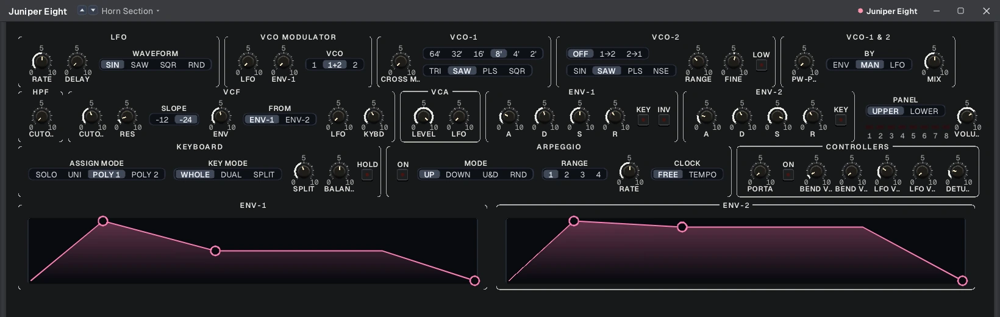
Polysynth
Eight voices of two oscillators, layered or split across the keys, with an arpeggiator.
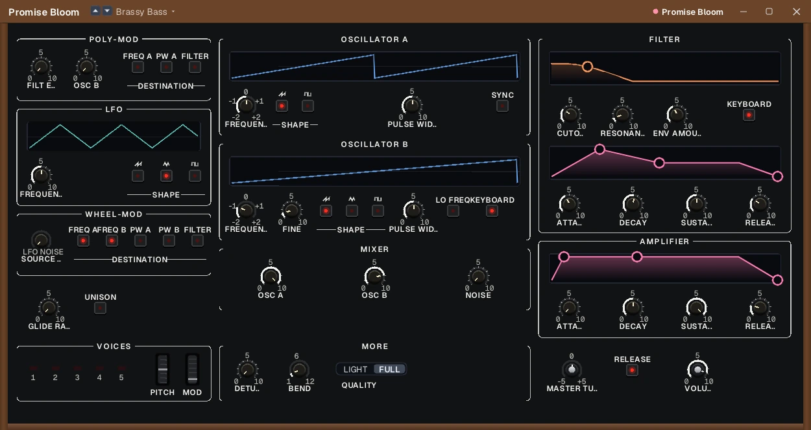
Polysynth
Five voices of two oscillators, with poly-mod for bells, brass and sweeps.
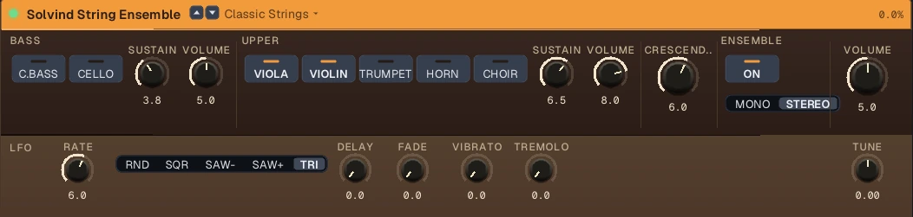
String ensemble
Bass and upper sections, from cello to choir, through a rich ensemble.
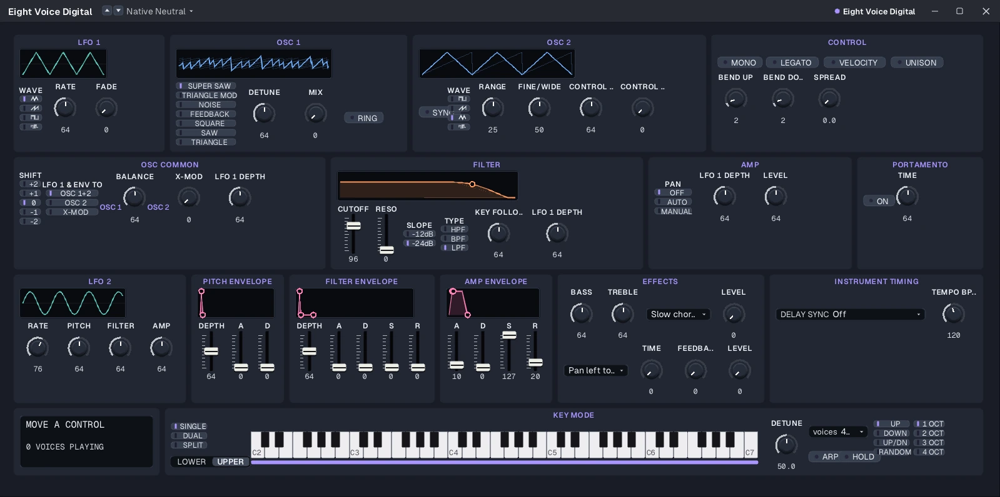
Digital polysynth
Eight voices in two parts, with seven oscillator modes, sync and cross modulation.
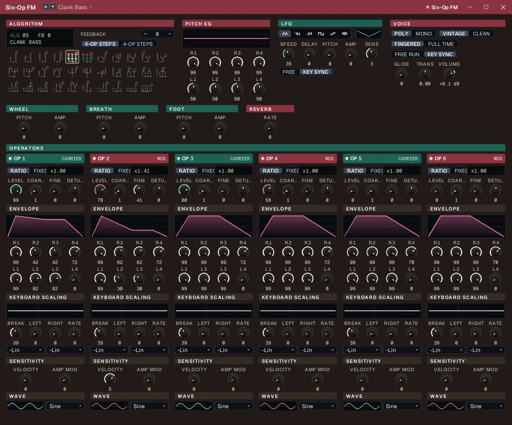
FM synth
Six operators and their algorithms, for electric pianos, bells and basses that cut. Opens DX7 voice banks.
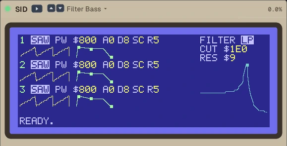
Chip synth
Three voices with the sound of an 8-bit home computer's chip: pulse, sync, ring modulation and a shared filter.
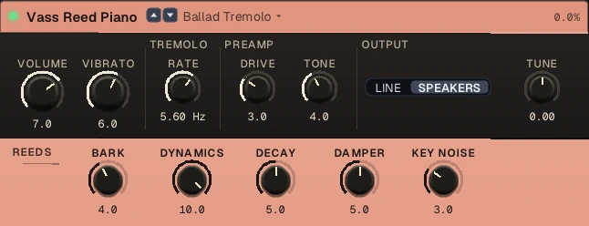
Reed electric piano
Felt hammers on steel reeds, with tremolo and the bark of a driven preamp.
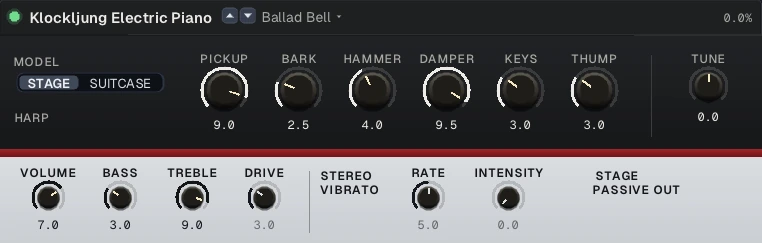
Tine electric piano
Hammers on tines, a bell in the attack and a stereo vibrato.
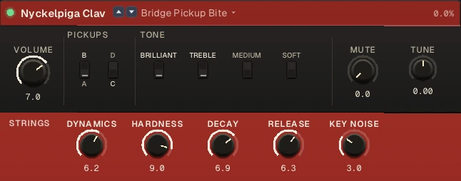
Electric clavichord
Struck strings and their pickups, from soft to brilliant, for funk that bites.
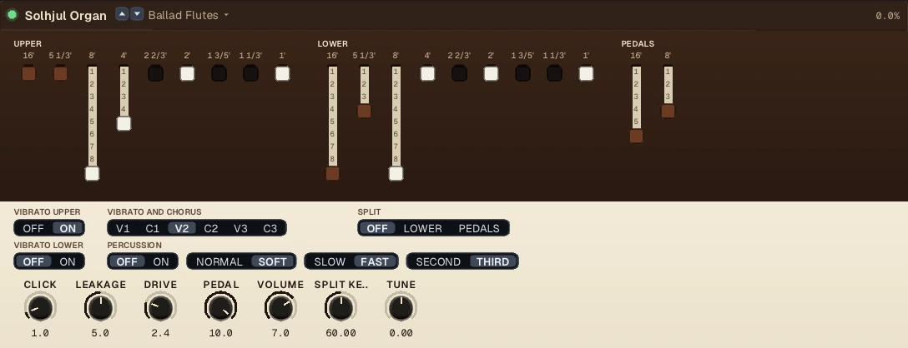
Tonewheel organ
Ninety-one tonewheels, drawbars, percussion and a chorus-vibrato.
Drum machines
Three analogue drum machines, every voice built from its circuit.
Plug in and play through a whole rig, from the gate to the miked cabinet.
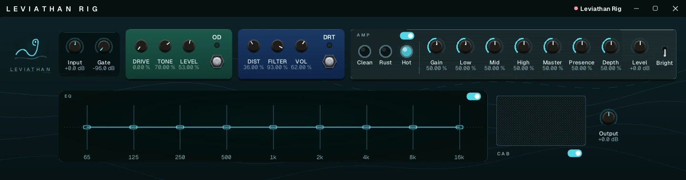
Guitar rig
A heavy rig in one device: gate, overdrive, distortion, amp, EQ and cabinet, each switched by itself.
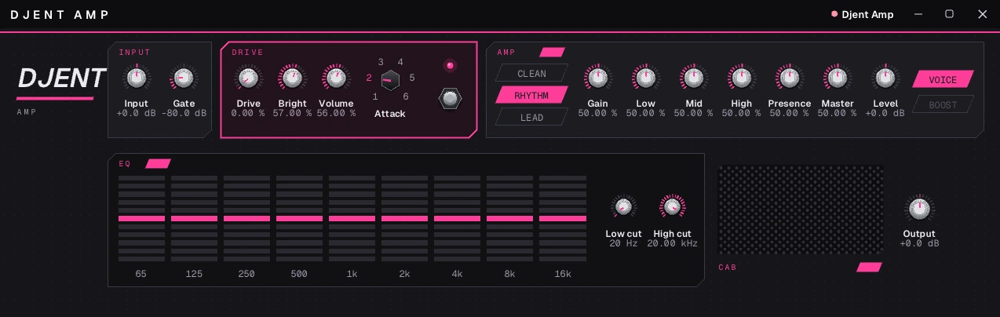
Guitar rig
Tight and heavy: a drive with its own attack, three amp channels, EQ and cabinet.
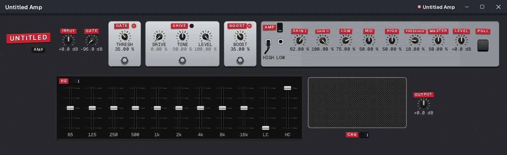
Guitar rig
Gate, drive and boost into an amp with two gains, then EQ and cabinet.
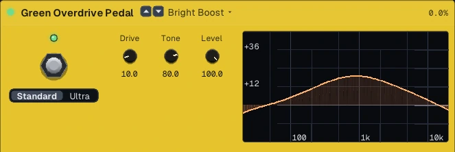
Overdrive
Lifts the middle of your guitar into two diodes, for a singing push into an amp.
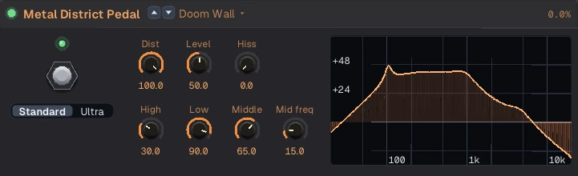
Distortion
High gain with an equaliser of its own, from scooped to a wall of mids.
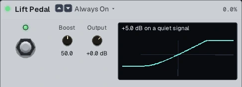
Clean boost
One transistor that raises the level and the edge of an amp.
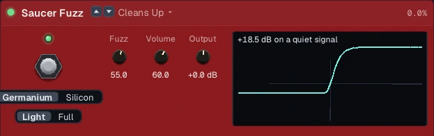
Fuzz
Two transistors, germanium or silicon, from smooth to sputtering.
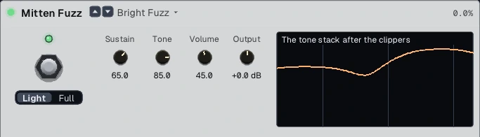
Sustaining fuzz
Four stages of soft clipping and a tone stack, for sustain without end.
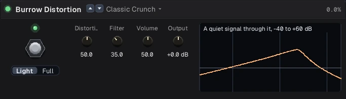
Distortion
An op-amp that narrows as you turn it up, from crunch to grind.
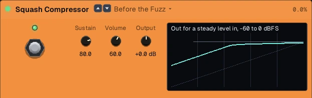
Compressor
Evens your playing out, for clean funk and country picking.
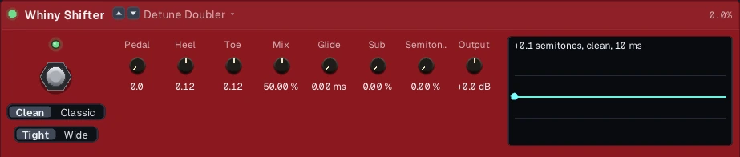
Pitch shifter
An expression pedal sweeps the pitch between a heel and a toe interval.
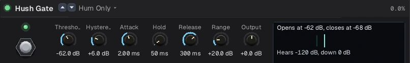
Noise gate
Shuts the hiss of a driven amp between notes.
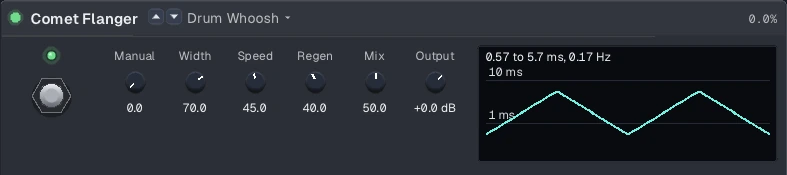
Flanger
A bucket-brigade flanger for guitars, keys, drums and whole mixes.
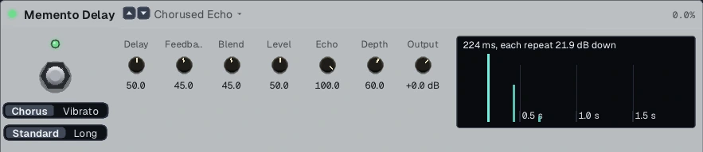
Delay
A bucket-brigade echo, with chorus or vibrato on its repeats.
TONE3000
Sign in to TONE3000 from Solmara to find amps, pedals and whole rigs that players have captured with Neural Amp Modeler. Download them into your library and play them in the A2 Modeller Amp. A project keeps the tones it uses, so it opens the same on another computer.
The scale shaded behind your notes, and chords suggested for the ones you pick.
Steps, accents and swing, the way drum machines work.
Rows of notes and commands, fast from the keyboard.
A rhythm written as a line of text, heard as you type.
The same studio on all three. Start a song on one and finish it on another.
Saved as readable text, so a version history shows what changed, and brought back after a crash.
Everything the editor does also works from the command line, so scripts and AI agents can build and mix a song. Leave it alone and Solmara is simply a studio.
Solmara is being built a piece at a time. When there is something to try, it will be here and under Releases on GitHub.
Sol is the sun. Mara is the spirit of Nordic folklore who sits on a sleeper's chest, the mare in nightmare. Solmara is the sun's nightmare: an eclipse, when the wolf that chases the sun across the sky catches it.
Tell us on GitHub: what you did, what you heard, and what you expected.